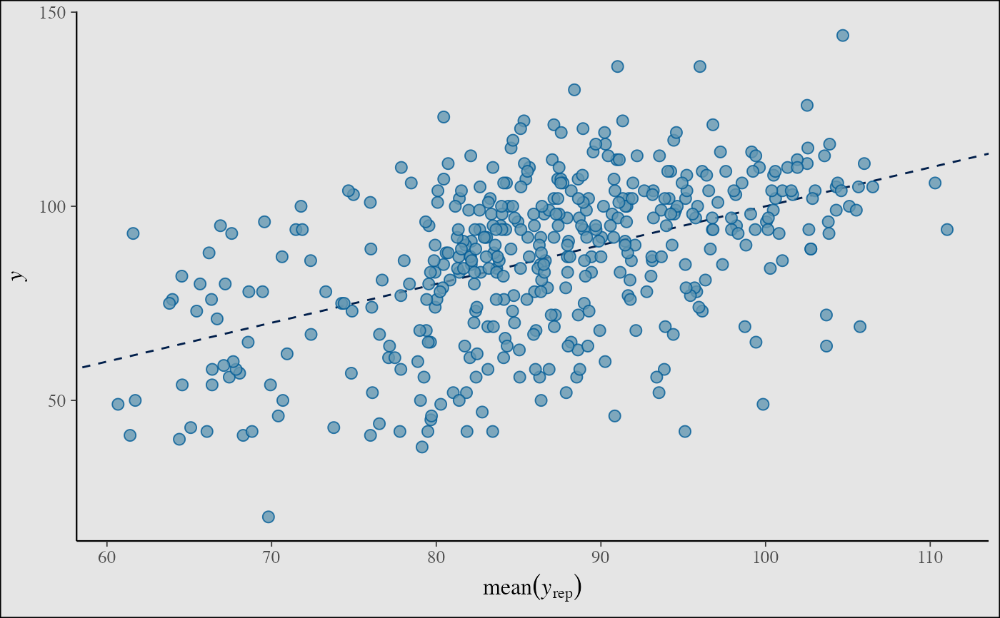

Convenience functions for adding or changing plot details
Convenience functions for adding to (and changing details of) ggplot objects (many of the objects returned by bayesplot functions). See the Examples section, below.
vline_at(v, fun, ..., na.rm = TRUE) hline_at(v, fun, ..., na.rm = TRUE) vline_0(..., na.rm = TRUE) hline_0(..., na.rm = TRUE) abline_01(..., na.rm = TRUE) lbub(p, med = TRUE) legend_move(position = "right") legend_none() legend_text(...) xaxis_title(on = TRUE, ...) xaxis_text(on = TRUE, ...) xaxis_ticks(on = TRUE, ...) yaxis_title(on = TRUE, ...) yaxis_text(on = TRUE, ...) yaxis_ticks(on = TRUE, ...) facet_text(on = TRUE, ...) facet_bg(on = TRUE, ...) panel_bg(on = TRUE, ...) plot_bg(on = TRUE, ...) grid_lines(color = "gray50", size = 0.2) overlay_function(...)
Arguments
| v | Either a numeric vector specifying the value(s) at which to
draw the vertical or horizontal line(s), or an object of any type to use as
the first argument to |
|---|---|
| fun | A function, or the name of a function, that returns a numeric vector. |
| ... | For the various For functions ending in For functions ending in For For |
| na.rm | A logical scalar passed to the appropriate geom (e.g.
|
| p | The probability mass (in [0,1]) to include in the interval. |
| med | Should the median also be included in addition to the lower and upper bounds of the interval? |
| position | The position of the legend. Either a numeric vector (of
length 2) giving the relative coordinates (between 0 and 1) for the legend,
or a string among |
| on | For functions modifying ggplot theme elements, set
|
| color, size | Passed to |
Value
A ggplot2 layer or theme object that can be
added to existing ggplot objects, like those created by many of the
bayesplot plotting functions. See the Details section.
Details
Add vertical, horizontal, and diagonal lines to plots
vline_atandhline_atreturn an object created by eithergeom_vlineorgeom_hlinethat can be added to a ggplot object to draw a vertical or horizontal line (at one or several values). Iffunis missing then the lines are drawn at the values inv. Iffunis specified then the lines are drawn at the values returned byfun(v).vline_0andhline_0are wrappers forvline_atandhline_atwithv = 0andfunmissing.abline_01is a wrapper forgeom_ablinewith the intercept set to 0 and the slope set to 1.lbubreturns a function that takes a single argumentxand returns the lower and upper bounds (lb,ub) of the100*p% central interval ofx, as well as the median (ifmedisTRUE).
Control appearance of facet strips
facet_textandfacet_bgreturn ggplot2 theme objects that can be added to an existing plot (ggplot object) to format the text and the background for the facet strips.
Move legend, remove legend, or style the legend text
legend_moveandlegend_nonereturn a ggplot2 theme object that can be added to an existing plot (ggplot object) in order to change the position of the legend (legend_move) or remove the legend (legend_none).legend_textworks much likefacet_text, except it controls the legend text.
Control appearance of \(x\)-axis and \(y\)-axis features
xaxis_titleandyaxis_titlereturn a ggplot2 theme object that can be added to an existing plot (ggplot object) in order to toggle or format the titles displayed on thexoryaxis. (To change the titles themselves uselabs.)xaxis_textandyaxis_textreturn a ggplot2 theme object that can be added to an existing plot (ggplot object) in order to toggle or format the text displayed on thexoryaxis (e.g. tick labels).xaxis_ticksandyaxis_ticksreturn a ggplot2 theme object that can be added to an existing plot (ggplot object) to change the appearance of the axis tick marks.
Customize plot background
plot_bgreturns a ggplot2 theme object that can be added to an existing plot (ggplot object) to format the background of the entire plot.panel_bgreturns a ggplot2 theme object that can be added to an existing plot (ggplot object) to format the background of the just the plotting area.grid_linesreturns a ggplot2 theme object that can be added to an existing plot (ggplot object) to add grid lines to the plot background.
Superimpose a function on an existing plot
overlay_functionis a simple wrapper forstat_functionbut with theinherit.aesargument fixed toFALSE. Fixinginherit.aes=FALSEwill avoid potential errors due to theaesthetic mapping used by certain bayesplot plotting functions).
See also
theme_default for the default ggplot theme used by
bayesplot.
Examples
#> [1] 250 4colnames(x)#> [1] "alpha" "sigma" "beta[1]" "beta[2]"################################### ### vertical & horizontal lines ### ################################### (p <- mcmc_intervals(x, regex_pars = "beta"))# vertical line at zero (with some optional styling) p + vline_0()p + vline_0(size = 0.25, color = "darkgray", linetype = 2)# vertical line(s) at specified values v <- c(-0.5, 0, 0.5) p + vline_at(v, linetype = 3, size = 0.25)my_lines <- vline_at(v, alpha = 0.25, size = 0.75 * c(1, 2, 1), color = c("maroon", "skyblue", "violet")) p + my_lines# add vertical line(s) at computed values # (three ways of getting lines at column means) color_scheme_set("brightblue") p <- mcmc_intervals(x, regex_pars = "beta") p + vline_at(x[, 3:4], colMeans)p + vline_at(x[, 3:4], "colMeans", color = "darkgray", lty = 2, size = 0.25)p + vline_at(x[, 3:4], function(a) apply(a, 2, mean), color = "orange", size = 2, alpha = 0.1)# using the lbub function to get interval lower and upper bounds (lb, ub) color_scheme_set("pink") parsed <- ggplot2::label_parsed p2 <- mcmc_hist(x, pars = "beta[1]", binwidth = 1/20, facet_args = list(labeller = parsed)) (p2 <- p2 + facet_text(size = 16))b1 <- x[, "beta[1]"] p2 + vline_at(b1, fun = lbub(0.8), color = "gray20", size = 2 * c(1,.5,1), alpha = 0.75)p2 + vline_at(b1, lbub(0.8, med = FALSE), color = "gray20", size = 2, alpha = 0.75)########################## ### format axis titles ### ########################## color_scheme_set("green") y <- example_y_data() yrep <- example_yrep_draws() (p3 <- ppc_stat(y, yrep, stat = "median", binwidth = 1/4))# turn off the legend, turn on x-axis title p3 + legend_none() + xaxis_title(size = 13, family = "sans") + ggplot2::xlab(expression(italic(T(y)) == median(italic(y))))################################ ### format axis & facet text ### ################################ color_scheme_set("gray") p4 <- mcmc_trace(example_mcmc_draws(), pars = c("alpha", "sigma")) myfacets <- facet_bg(fill = "gray30", color = NA) + facet_text(face = "bold", color = "skyblue", size = 14) p4 + myfacets########################## ### control tick marks ### ########################## p4 + myfacets + yaxis_text(FALSE) + yaxis_ticks(FALSE) + xaxis_ticks(size = 1, color = "skyblue")############################## ### change plot background ### ############################## color_scheme_set("blue") # add grid lines ppc_stat(y, yrep) + grid_lines()#>color_scheme_set("yellow") p5 <- ppc_scatter_avg(y, yrep, alpha = 1) p5 + panel_bg(fill = "gray20") + grid_lines(color = "white")color_scheme_set("purple") ppc_dens_overlay(y, yrep[1:30, ]) + legend_text(size = 14) + legend_move(c(0.75, 0.5)) + plot_bg(fill = "gray90") + panel_bg(color = "black", fill = "gray99", size = 3)############################################### ### superimpose a function on existing plot ### ############################################### # compare posterior of beta[1] to Gaussian with same posterior mean # and sd as beta[1] x <- example_mcmc_draws(chains = 4) dim(x)#> [1] 250 4 4purple_gaussian <- overlay_function( fun = dnorm, args = list(mean(x[,, "beta[1]"]), sd(x[,, "beta[1]"])), color = "purple", size = 2 ) color_scheme_set("gray") mcmc_hist(x, pars = "beta[1]") + purple_gaussian#>